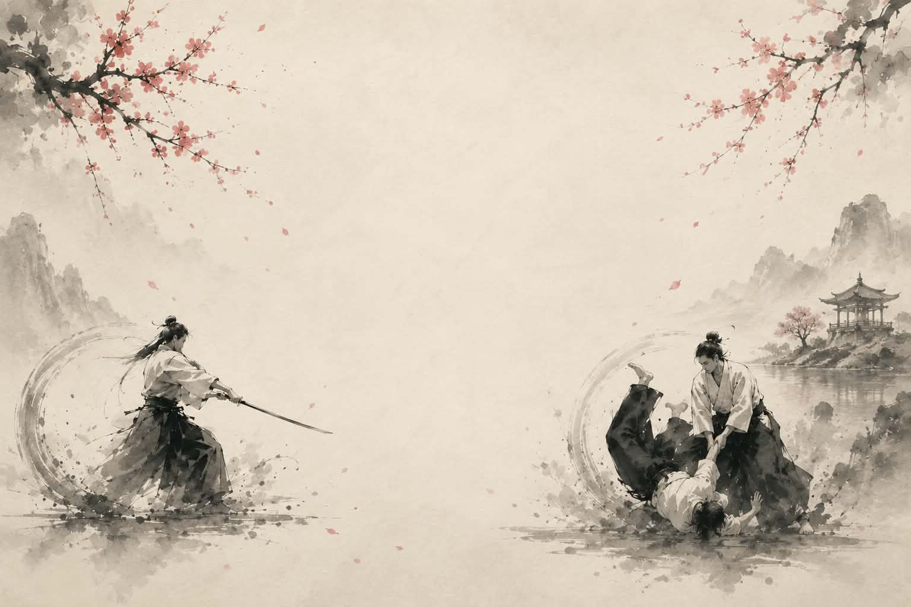

Aïkido · Iaïdo — Gignac, Hérault
Un dojo convivial au cœur de la vallée de l'Hérault. Pas de compétition, pas d'épreuve de force : une pratique en souplesse, accessible à toutes et à tous, des enfants aux adultes.
Venir essayer Voir les horairesDojo fondé en 1981 — parmi les plus importants de l'Hérault

Enfants dès 6 ans & adultes
Art martial japonais fondé par maître Morihei Ueshiba, introduit en France dans les années 1960 sous l'impulsion de maître Tamura Sensei, 8e dan. Une méthode complète d'éducation physique et morale : courtoisie, respect de l'autre, entraide et persévérance se cultivent sur les tatamis.
La recherche de l'aïkidoka est celle de l'équilibre optimum de l'individu, par rapport à lui-même et à son environnement. Il n'y a aucune violence : tout se fait en souplesse.
À partir de 14 ans
Hérité des samouraïs, le Iaïdo est l'art de dégainer et de manier le sabre japonais — littéralement « la Voie de l'Unité de l'Être ». La pratique s'effectue au katana, au iaï-to (sabre non tranchant) ou au bokken pour les débutants, à travers des katas codifiés.
Nous pratiquons l'école fédérale Seitei Iaï ainsi que l'école Muso Shinden Ryu, la plus enseignée en France. Prêt de matériel par le club la première année.
| Jour | Discipline | Public | Heure |
|---|---|---|---|
| Lundi | Aïkido | Enfants | 18h00 – 19h00 |
| Lundi | Aïkido | Adultes | 19h00 – 21h00 |
| Mercredi | Aïkido | Préparation grades | 19h00 – 21h00 |
| Mercredi | Iaïdo | Dès 14 ans | 19h00 – 21h00 |
| Vendredi | Aïkido | Enfants | 18h00 – 19h00 |
| Vendredi | Aïkido | Adultes | 19h00 – 21h00 |
| Samedi | Iaïdo | Dès 14 ans | 9h00 – 12h00 |
Tous les cours ont lieu dans la salle d'Aïkido du Centre Culturel et Sportif, avenue du Mas Salat, 34150 Gignac.
Paiement en 3 fois possible. Tarifs dégressifs pour un cours par semaine et dès le 2ᵉ adhérent d'une même famille.
Prêt de iaï-to ou de bokken par le club avant un achat personnel. Tenue obligatoire dès la 2ᵉ année.
Aïkido — 6ᵉ dan, Brevet d'État
Aïkido — 5ᵉ dan, Brevet Fédéral
Aïkido — 4ᵉ dan, Brevet Fédéral
Aïkido enfants — 3ᵉ dan
Aïkido enfants — 2ᵉ dan, Brevet Fédéral
Aïkido enfants — assistant, 1ᵉʳ dan
Iaïdo — 3ᵉ dan
Iaïdo — 2ᵉ dan
[ Emplacement Instagram : à brancher via Behold ou SociableKIT — nécessite une connexion au compte Instagram du club ]
Aïkido — Jonathan Mas
06 04 53 34 82
Iaïdo — Jean-Claude Saunier
06 63 04 69 39
Dojo — Centre Culturel et Sportif
Avenue du Mas Salat, 34150 Gignac
Envie d'essayer ? Venez simplement à un cours avec une tenue souple — le premier essai est offert et sans engagement. L'aïkido est accessible à tous, homme ou femme, de l'âge tendre à l'âge mûr.
[ Emplacement : formulaire de contact + dossier d'inscription PDF téléchargeable ]